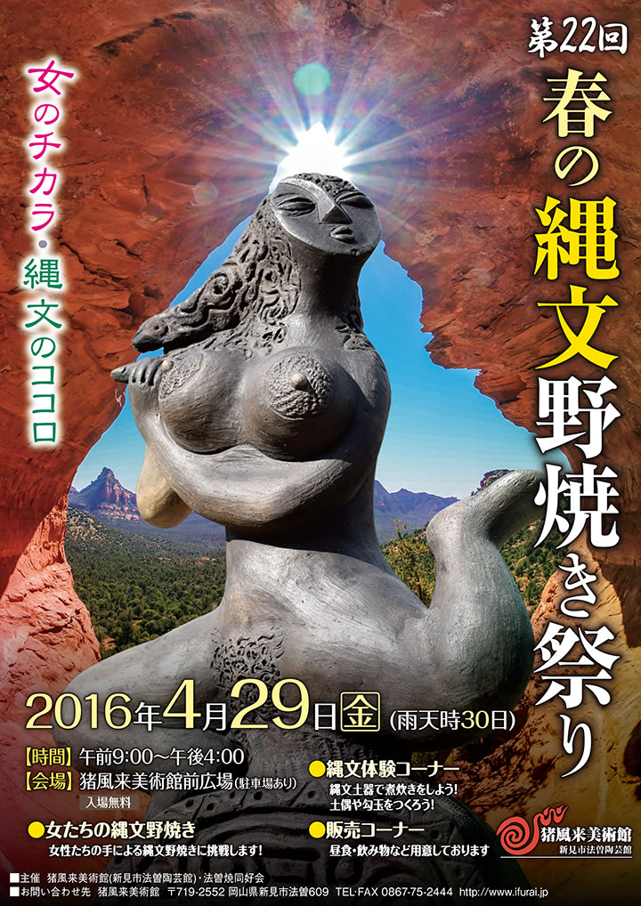
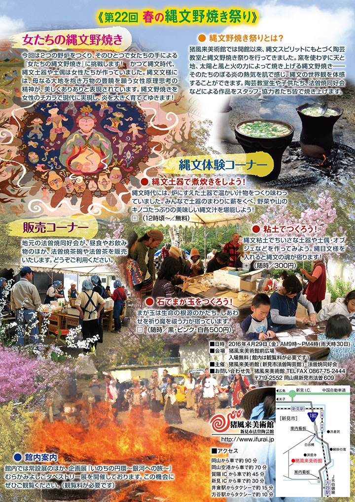

― お知らせ･活動予定 ―
-
■企画展『いのちの円環～銀河への旅～』むらかみよしこタペストリー展
【期 間】２０１６年３月１日（火）～５月２９日（日） -
■第２２回 春の縄文野焼き祭り（平成２８年度）
【開催日】２０１６年４月２９日（金） -
■猪風来縄文塾 塾生募集！
第１回縄文塾『縄文野焼きの心と技を学ぼう』
【開催日】２０１６年３月２０日（日）※雨天時→２１日
【会 場】猪風来美術館創作館／広場 -
■鎮魂と復興を祈念して「縄文いのりの土偶」をつくろう
―東日本大震災への祈り―
| 【企画展『いのちの円環～銀河への旅～』チラシ】 →PDF版を開く |
前作「いのちの祝祭」に続く《命の星シリーズ》の2作目。
この作品は、亡くなった幼い我が子の命の痕跡を求めて、銀河の果てまでも捜し歩く物語です。
大切な命を失った時に誰でもが感じる底なしの喪失感。
終着点のない旅だけれど、この頃やっとこの世界のいたるところにあの子を見出すことができるようになった。
大地に身をゆだね草や木やたくさんの生きものたちの息を感じ、また風や水の流れをわが身の中に入れてみる。
すると大地や空やあらゆる大自然に溶け込んで一体化したあの子の命の痕跡を感じ取れるようになった。
生命そのものの核心にせまる根源のスピリット。
それは、縄文や世界中のネイティブの人々の中に息づいているスピリットでもある。
大自然との深いつながりと共生感。
死してのち自然の懐に帰り、再び生をとりもどすという「死と再生」。
大自然のなかに宿る命の永遠性・繰り返し甦り連なっていく命の円環。
死ののちには命の新しい円環があり、命の祝祭の場へ続く。
本作品では遠い昔の恐竜の世界で見つけたあの子、北の極地で見つけたクジラのあの子、宇宙の銀河の渦に
のったあの子など、きらめき輝く「いのち」が大きいタペストリー全体に躍動しています。
羊毛の手紡ぎ・草木染・手織り作品。どうぞご覧下さい。
|  |
|  |
| 【「第22回 春の縄文野焼き祭り」チラシ】 →PDF版を開く |
● 縄文野焼き祭りとは？
猪風来美術館では開館以来、縄文スピリットにもとづく陶芸教室と縄文野焼き祭りを行ってきました。
窯を使わずに天と地、太陽と風と火の力によって焼き上げる縄文野焼き――そのたちのぼる炎の熱気を肌で
感じ、縄文の世界観を体感することができます。
陶芸教室生や子供たち、法曽焼同好会などによる作品をスタッフ・協力者たち皆で焼き上げます。
=∴=∵=∴=∵=∴=∵=∴=∵=∴=∵=∴=∵=∴=∵=∴=∵=∴=∵=∴=∵=∴=∵=∴=∵=∴=∵=∴=
《女たちの縄文野焼き》
今回は２つの野炉をつくり、そのひとつで女たちの手による『女たちの縄文野焼き』に挑戦します！
かつて縄文時代、縄文土器や土偶は女性たちが作っていました。
縄文文様には、母なる大地を抱き万物の豊饒を願う女性原理思考の精神が、美しくありありと表現されています。
縄文野焼きを女性のチカラで現代に実現し、炎を大きく育ててゆきます！
※詳細・参加希望については【第１回縄文塾】を参照ください。
=∴=∵=∴=∵=∴=∵=∴=∵=∴=∵=∴=∵=∴=∵=∴=∵=∴=∵=∴=∵=∴=∵=∴=∵=∴=∵=∴=
《縄文体験コーナー》
● 縄文土器で煮炊きをしよう！
縄文時代には、炉にすえた土器で温かい汁物をつくり味わっていました。
みんなで土器のまわりに薪をくべ、野菜や山のキノコたっぶりの美味しい縄文汁を堪能しよう！
□ （12時頃～／無料）
● 粘土でつくろう！
縄文粘土でちいさな土器や土偶・オブジェなどを作ってみよう。
縄目文様を入れると縄文の魂が宿ります！
□ （随時／300円）
● 石でまが玉をつくろう！
まが玉は生命の根源のかたち。
しあわせを祈り魔を祓う力が宿っています。
□ （随時／黒・ピンク・白各500円）
=∴=∵=∴=∵=∴=∵=∴=∵=∴=∵=∴=∵=∴=∵=∴=∵=∴=∵=∴=∵=∴=∵=∴=∵=∴=∵=∴=
《販売コーナー》
地元の法曽焼同好会が、昼食やお飲み物のほか、法曽焼茶碗や法曽茶を販売いたします。
どうぞご利用ください。
=∴=∵=∴=∵=∴=∵=∴=∵=∴=∵=∴=∵=∴=∵=∴=∵=∴=∵=∴=∵=∴=∵=∴=∵=∴=∵=∴=
● 館内案内
館内では常設展のほか、企画展『いのちの円環～銀河への旅～』むらかみよしこタペストリー展を開催して
おります。この機会にぜひご観覧ください。（観覧料が必要です）
=∴=∵=∴=∵=∴=∵=∴=∵=∴=∵=∴=∵=∴=∵=∴=∵=∴=∵=∴=∵=∴=∵=∴=∵=∴=∵=∴=
■日時 2016年4月29日 〔金〕 AM９時～PM４時(雨天時30日)
■会場 猪風来美術館前広場
入場無料(館内は観覧料が必要です)
■主催 猪風来美術館(新見市法曽陶芸館)・法曽焼同好会
■お問い合わせ先 猪風来美術館 TEL･FAX 0867-75-2444
〒719-2552 岡山県新見市法曽609
|
縄文塾は、現代縄文アートの第一人者である猪風来を中心として、実践を通じて縄文の真髄をともに学ぶ場です。 これまで猪風来美術館では10年にわたり陶芸教室を開き、多くの関心ある人が縄文造形を学ぶ場として機能して 一方で近年、陶芸教室の枠を越えてさまざまな形で美術館に関わり縄文を学びたいという声の高まりがあり、こ 今日では現代縄文アートの新たな潮流が起き、縄文の美と豊かな精神文化への関心が高まり、世界へと波及して その中にあって、塾生が現代の縄文文化の主体的な担い手としてさまざまな切り口から縄文を学び、その“心と |
第１回縄文塾
『縄文野焼きの心と技を学ぼう』
春の縄文野焼き祭り（４月２９日予定）に向けて、縄文野焼きの基本を土器を焼きながら実践的に学びます。
祭りでの野焼きスタッフ希望者はぜひご参加ください！
■日時 ２０１６年３月２０日（日）※雨天時→２１日
午前１０時～午後４時頃
■会場 猪風来美術館創作館／広場
■参加費 1,000円 ※土器汁試食付き
■申し込み・お問い合わせ 猪風来美術館 TEL/FAX 0867-75-2444
（３月１３日まで）
※昼食は各自持参してください。
※野焼き作業ができる服装でおいでください。
女たちの縄文野焼き
春の縄文野焼き祭り（４月２９日予定）において女性たちの取り仕切るエリアを設け、女たちの力による
「女たちの縄文野焼き」に挑戦します！
かつて縄文時代、縄文土器や土偶は女性たちが作っていました。
縄文文様には、母なる大地を抱き万物の豊饒を願う女性原理思考の精神が、美しくありありと表現されています。
当館陶芸教室において「女たちの縄文野焼き」を実施したいという声があがり、その第一歩として企画しました。
縄文野焼きを女性の手で現代に実現し、炎を大きく育てていきましょう。
※参加希望者は第１回縄文塾への参加と、当館陶芸教室での作品制作（４月初旬まで）をお願い致します。
※焼き上げた作品を展示する企画展『女たちの縄文野焼き作品展』を開催予定です。
展示予定期間：６月１日（水）～８月２８日（日）

|
このたびの東日本大震災による被災に対しまして、心からのお見舞いと哀悼の意を表します。
被害地の惨状と深い悲しみの中で、再起を期して心を奮い立たせている被災者の皆様への応援の気持ちをこめて
「縄文いのりの土偶」をつくりませんか？
古来より縄文の土偶は、豊饒を願い災難をはらい、鎮魂と再生を祈願してつくられたものです。
猪風来美術館では開館以来、「にぎり地蔵」として願い思いをこめた小さな土偶を、陶芸体験の皆さんに
つくっていただいてきました。
野焼きしたお地蔵さまは、一部美術館と済渡寺をつなぐ参道の祠におかれ、「野辺の地蔵さまロード」として
みんなの思いをつなぐスポットになっています。
２０１０年４月１６日に開催された「春の縄文野焼き祭り」の縄文体験コーナー「にぎり地蔵をつくろう」では
『震災地への思いや気持ちをこめて「縄文いのりの土偶」をつくり、被災された方々へ思いをつなげよう』
との趣旨で呼びかけをさせていただきました。
その際、みなさまに多くのご理解とご賛同をいただきました。
復興はおそらく、これから長くかかることでしょう。
そのため「縄文いのりの土偶」づくりの活動もまた、継続していきたいと思っております。
どうぞ御協力よろしくお願いいたします。
※ 参加費300円は全額、復興義援金として寄付させていただきます。
※ 制作された「縄文いのりの土偶」のご寄付をお願いします。
※ 後日縄文野焼きされた「縄文いのりの土偶」の安置場所は検討させていただきます。